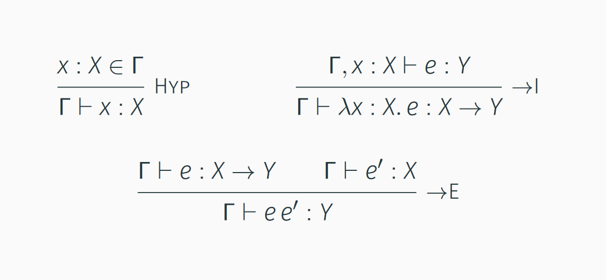

NPRG014
Advanced types in TypeScript
Guest lecture
Tomáš Petříček, 309 (3rd floor)
petricek@d3s.mff.cuni.cz
https://tomasp.net | @tomaspetricek
https://d3s.mff.cuni.cz/people/tomaspetricek/
Where I'm coming from?
-
PhD, University of Cambridge
Types for context-aware programming -
Microsoft Research Cambridge
F# and applied functional programming -
The Alan Turing Institute, London
Expert and non-expert tools for data science -
University of Kent, Canterbury
Programming systems and history

What is my quest?
More programming language research in Prague
Ask about reading group!
Do a PL project or thesis!
Join us for a PhD?
Language design
Different approaches

Formal properties
Language should be based on sound formal foundations!
Haskell and pure functional languages
Self and pure object-oriented programming

Implementation properties
Should be easy to compile and close to the underlying system!
Fortran, C but also
the Go language

User experience properties
Language should integrate well with the rest of the ecosystem
Scratch, HyperTalk, BASIC and aspects of Visual Basic
Case study: LINQ
LINQ queries in Visual Basic .NET and C#
Dim db As New northwindDataContext
Dim ukCompanies =
From cust In db.Customers
Where cust.Country = "UK"
Select cust.CompanyName, cust.City
Why confuse programmers familiar with SQL?
SELECT [CompanyName], [City]
WHERE [Country] = 'UK'
FROM dbo.[Northwind]
TypeScript
Design & history
TypeScript
Language design motivations
- Full compatibility with JavaScript
- Support large-scale development
- Provide checking where possible
- Work with existing JavaScript code!

Retrofitting programming language to code?
Well, actually...
TypeScript by Microsoft
Hack by Facebook
Any new language version?

Retrofitting JavaScript with types
External definitions for existing libs (.d.ts)
Not everything can be typed (allow any)
JavaScript quirks
(null vs. undefined)
TypeScript types evolution

Version <2 (2012-16)
- Conservative extension of JavaScript
- Type system follows the 80%/20% rule
Versions 2, 3 (2016-20)
- More type-level gymnastics, closer to 90%
Version >=4 (2020-...)
- Even more fancy types, closer to 99%?
- Allows some scary type system hacks!
TypeScript
Practical types
Demo
Typing the createElement function
// Union type and null type
getElementById(elementId:string):
HTMLElement | null
// Overloaded function
// String literal types
createElement(tagName:"input"):
HTMLInputElement
createElement(tagName:"button"):
HTMLButtonElement
Types concepts
Overloaded functions
But with single implementation!
Flow-sensitive typing
To eliminate nulls
Union and literal types
More generally useful
"Clean" functional design

Options instead of nulls
type Option<'T> =
| Some of 'T // Option has a value
| None // Option has no value
Matching instead of flow
match optElement with
| None -> failwith "out element missing"
| Some element ->
el.appendChild(input)
el.appendChild(btn)
Analysis
Flow-sensitive typing
- Compatible with existing JavaScript code
- No need for extra syntax
- Somewhat unexpected behaviour!
- Type of variable changes with scope
- Valid patterns do not pass
Task #1
Break flow-sensitive typing!
Literal and union types
Union types
- Value of one of several types
- Safe languages prefer tagged unions!
- Flow-sensitive typing with
typeofworks
Literal types
- Type of a unique TypeScript value
- Works on values beyond strings, e.g.
[42] - Composes with other types, e.g.
[0|1, number]
Demo
Unions, typeof, array literal types
Task #2
Implement bit increment
// Multiple overload signatures
function speak(animal:"dog") : void
function speak(animal:"cat") : void
// One compatible implementation
function speak(animal:string) {
switch(animal) {
case "dog":
console.log("woof")
return
case "cat":
console.log("meow")
return
}
}
Function type overloading
Implementation signature is hidden
Overload signature has to be compatible with the implementation
Overloads can differ
in return type!
Task #3
Implementing createAnimal function
Special types
- void - No value, but usable as return type
- never - No value, represent unreachable code
- unknown - Cannot be used in any way
- any - Unknown, but can be used anywhere
- undefined - Special undefined value
- null - Special null value
Demo
What can and cannot be done with never
Union and intersection types
Union (T1 | T2)
-
Represents set union of
the values of the two types
Intersection (T1 & T2)
-
Represents set intersection
of the values of the types
Demo
Record extension via intersection types
TypeScript
Algebraic data types
// Algebraic data type that
// represents an expression
type Expr =
// Numerical constant
| Const of int
// Named variable
| Variable of string
// Unary & binary operators
| Unary of string * Expr
| Binary of string * Expr * Expr
// Function with arguments
| Function of string * Expr list
Algebraic types
Popular functional modelling tool
Entity consists of multiple sub-entities (operator + arguments)
Entity can be one of several options (number, variable, ...)
Demo
Algebraic data types in TypeScript
Algebraic data types
Literal & union types
- Tag to represent the kind of type
-
{ t:"s1" } | { t:"s2" }
= { t:"s1" | "s2" }
Flow-sensitive typing
- Check for a tag determines case
- Similar to pattern matching
- Works well with
switch!
Task #4
Write a simple expression evaluator
// Contact is an algebraic type
type Contact =
ContactEmail
| ContactPhone
| ContactAll
interface ContactEmail {
type: 'email'
email: string
}
interface ContactPhone {
type: 'phone'
number: number[]
}
interface ContactAll {
type: 'all'
email: string
number: number[]
}
Compare two representations
Do they represent the same data?
interface Student1 {
name: string
email: string | null
number: number[] | null
}
interface Student2 {
name: string
contact: Contact
}
Calculating with types

Type constructor algebra
- Record behaves as \(A * B\) or \(A \times B\)
- Unions behave as \(A + B\) or \(A \cup B\)
- Functions
A->Bbehave as \(B^A\) - Unit type is \(1\) and void (never) is \(0\)
Usual algebraic laws work!
- \(A*(B+C) = A*B + A*C\)
- \(A * 1 = A\) and \(A * 0 = 0\)
Calculating with types
\(Contact = (Phone * Email) + Email + Phone\)
\(Student2\)
\(\quad =Name * Contact\)
\(\quad {\color{green}=Name * ((Phone * Email) + Email + Phone)}\)
\(Student1\)
\(\quad = Name * (Phone+1) * (Email+1)\)
\(\quad = Name * ((Phone+1) * Email + (Phone+1) * 1)\)
\(\quad = {\color{blue}Name * ((Phone * Email) + Email + Phone }{\color{red}\;+\;1})\)
TypeScript
Type-level computation
// Returns book information consisting
// of title and year and description
// (only when detailed=true)
function getBook(index, detailed) {
let b = lookup(index);
if (detailed)
return {
title:b.title, year:b.year,
description:b.description }
else
return {
title:b.title, year:b.year }
}
Motivation
How to check more dynamic behaviour?
Dependent types!?
Return type depends on the value (type) of the argument
Dependent types

Serious type theory business!
-
Types corresponding to
terms in predicate logic - Used in theorem provers
More practical uses exist
- Track number of elements in a list
List n T List n T -> List m T -> List (n+m) T
type LabelOrId<T> =
// If T is a number,
// result has id:number
T extends number ?
{ id:number } :
// If T is a string
// result has label:string
T extends string ?
{ label:string } :
// Otherwise return
// unusable type
never;
Conditional types
cond ? type1 : type2
Result type depends
on another type
Condition can only check using extends (subtype)
Demo
Book info with optional details
Transforming record types
Keyof types
- Union type of type's keys as literals
{ age:number; name:string }keyof(P) = "age"|"name"
Indexed access types
- Type of a property of a type
P["age"] = numberP[keyof P] = "number"|"string"
Demo
Filtering book records by key
Task
Implement well-typed join operation
Demo
Transforming record types using keyof
Galaxy brain?
Pattern matching at the type level using infer/extends
Type level array and string interpolation
Representing numbers at the type level
Demo
Flattening array types
Demo
Strings & type-level numbers

Arithmetic
You can do (big) arithmetic in TypeScript types
Why?
Good question...
but maybe matrix operations?
Task
Figure out how ts-arithmetic works!
TypeScript
Conclusions
Excuse to talk about
-
Programming language design
Design based on existing codebase is funny! -
Algebraic data types
Nice and powerful modelling tool -
Dependent type system concepts
Weird in TypeScript, but interesting! -
Some practical TypeScript tricks
Lets you do lots of useful things...
PL project ideas?
Safe data manipulation or charting libraries in TypeScript?
Types for untyped languages with existing codebase (R, Python)?
Conclusions
Advanced types in TypeScript
- Hidden surprises in a widely used language
- Happens to be unsafe and undecidable!
- Going beyond 80:20 requires lots of magic
- Talk to me about projects & PL reading group!
Tomáš Petříček, 309 (3rd floor)
petricek@d3s.mff.cuni.cz
https://tomasp.net | @tomaspetricek
https://d3s.mff.cuni.cz/teaching/nprg077